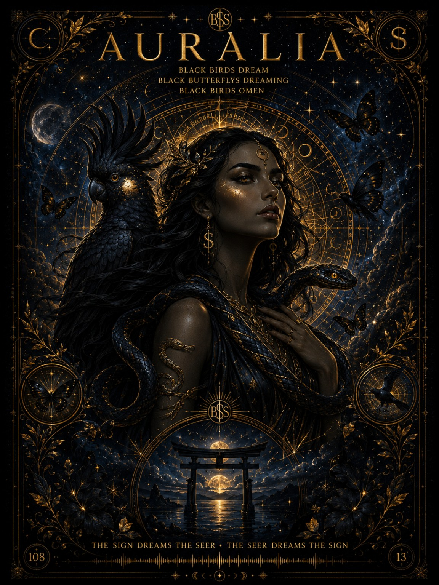

Blue $nake Studio · Outreach one-sheet · Frankston, Australia
B$S Outreach Pack
A quick sendable explanation of The Moss Man / Blue $nake Studio for arts organisations, councils, galleries, curators, collaborators and press contacts.

One-line description
Blue $nake Studio is an independent Frankston creative studio by The Moss Man, joining visual art, mythic music, child-safe learning tools, symbolic number systems and print-led street culture into one connected world.
Who
Tom / The Moss Man is a visual artist, singer, songwriter, digital builder, disability instructor and symbolic-system maker based around Frankston / Mornington Peninsula.
What
The studio makes gallery worlds, music releases, QR posters, classroom tools, Meta-Pet learning concepts, Moss 60 digital genome logic and printable artefact packs.
Why it matters
The work turns scattered creative output into usable public forms: learning tools, outreach pages, songs, posters, print sheets, web apps and community bridges.
Best first ask
Invite Tom to present the studio, trial a workshop, discuss a school/community pilot, exhibit selected work, or collaborate on a print/music/learning project.
Core project pillars
- Meta-Pet: child-safe, privacy-first digital learning companion concept.
- Teacher Tools: printable behaviour-support sheets and practical classroom resources.
- Black Wing Crew / Neon Venom: music world, lyrics, posters, QR drops and video assets.
- Moss 60: visual mathematics, symbolic number systems and digital-genome identity logic.
- Print Vault: posters, cards, zines, QR sheets and hand-to-hand street artefacts.
Contact
Email: bluesssnakestudio@gmail.com
Alt: blkck2@gmail.com
Use subject: B$S collaboration / pack enquiry
Short pitch copy
Hi — I’m Tom from Frankston, working as The Moss Man through Blue $nake Studio. I’ve built a connected creative portal across visual art, music, child-safe learning tools, symbolic systems and printable street assets. I’m looking for the right eyes: people open to unusual but practical creative projects that can become workshops, exhibitions, school resources, songs, print drops or community collaborations.